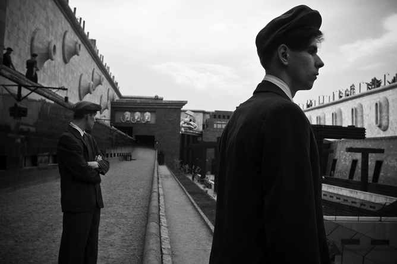
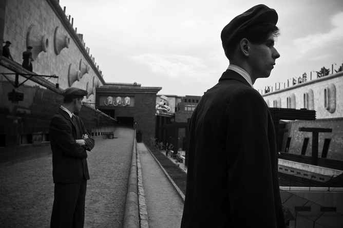
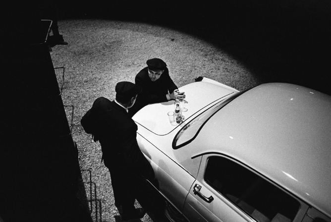
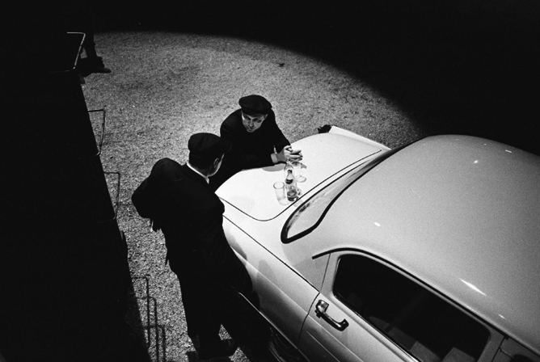

DAU — PRTCL. INS192–000167
DAU — PRTCL. INS192–
A protocol
for The Institute related docs.
A-B-LEFTSITE
DAU — TXT. HDK-0015
# Institute
Rooted in the top-secret, autonomous research facilities
built for Soviet scientists by Moscow, the DAU Institute became
an artistic and psychological playground
on a massive scale.
As in the closely-guarded sites that inspired it,
the researchers of the Institute explored fields ranging
from quantum physics, loop quantum gravity and string theory.
They also ventured outside scientific orthodoxy
to fields such as orgone energy, thought transference
and teleportation, movement through time and space,
psycho-artistic experimentation on the borders of human behaviour,
traditional and non-traditional practices and rituals —
Christian, Buddhist, Jewish and Shamanic —
applying scientific investigative principles
in each case.


DAU — PRTCL. INS192–0000636
— A
Construction, 1938
Institute
1
2
3
4
5
6
7
DAU — PRTCL. INS192 –0001229
Construction, 1938
DAU — PRTCL. INS192 –0001371
Construction, 1938
DAU — PRTCL. INS192 –0001400
Construction, 1938

DAU — PRTCL. INS192 –0001680
Left hand side road
to the Spatial Fluctuations
Research Lab


DAU — PRTCL. INS192 –0001982 # Institute
/ Detail
DAU — PRTCL. INS192 –0001887
Left hand side road
to the Spatial Fluctuations
Research Lab
DAU — PRTCL.
DAU — TXT.
INS192–0002120
HDK-0029, TERM:003
Starting in 2009, several hundred people
abandoned their normal lives for three years
travelling back in time to the
Soviet Union...
DAU — TXT.
to live and work
HDK-0030, TERM:0035
at the Institute
and subject themselves
to its demands.
They came from many backgrounds —
street-cleaners, global artists,
philosophers, bar-workers,
Nobel Prize winners,
state agents, scientific,
spiritual and political figures
cut themselves off
from their societies
and lived and worked together.
They created a new and self-contained
world that worked to its own
strict rules, and it became their
daily reality.
DAU — PRTCL.
INS192–0002192
DAU — PRTCL. INS192–0002200
DAU — PRTCL. INS192–0002301

DAU — PRTCL. INS192 –0002842
DAU — PRTCL. INS192 –0002846
~1938-39

DAU — PRTCL. INS192 –0002848
~1938-39
DAU — PRTCL. INS192 –0004801
~1956
 

DAU — PRTCL. INS192 –0003500
~1942
DAU — PRTCL. INS192 –0004847
~1956
 

DAU — PRTCL. INS192 –0003521
~1941
DAU — PRTCL. INS192 –0004851
~1956
DAU — PRTCL. INS192 –0003580
~1942
DAU — PRTCL. INS192 –0004847
A—
NO.
2004H
Alexander Vilenkin
Member of the International Scientific
Conference at the Institute
Insitute years: 1956
DAU — PRTCL. INS192 –0004849
DAU — PRTCL. INS192 –0004849
NO. 0001B